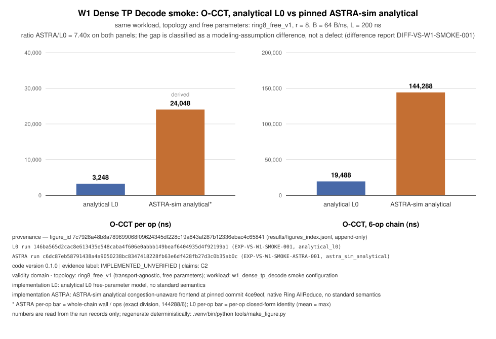

How it works
One manifest, four fidelities, one immutable record
Check it by hand
t(M) = (2(r−1)/r · M)/B + 2(r−1)L
r=8 M=16384 B=64 L=200
→ 448 ns + 2800 ns = 3248 nsNothing is opaque in an analytical backend: if your arithmetic and the record disagree, that is a model bug. Walkthrough
The record it leaves
run_id 146ba565…
run_dir results/146ba565…/
O-CCT 3248 ns per op
O-CONSERVATION 0 violationsIMPLEMENTED_UNVERIFIED — replay-pinned, not calibrated, not externally reproduced. Evidence
The discipline, on one workload
Two simulators disagree — the gap is explained, not tuned away

146ba565… and c6dc87eb…; figure 7c7928a4…. Evidence label: IMPLEMENTED_UNVERIFIED.
State of the repository
What runs today
717 + 1tests pass / skipped
4simulation paths, one manifest
445typed UEC 1.1 requirements from 80 anchors
30atlas cells: 5 rank classes × 6 families
0observables calibrated against hardware
| Capability | Where | Label |
|---|---|---|
| Test suite: 717 pass + 1 skip (schema, golden, negative, determinism, observables, evidence, backends, specir) | make test | IMPLEMENTED_UNVERIFIED |
Analytical L0 model family: ring, crossbar, 2D torus, recursive doubling, phase collectives, plus the L0.5 compute-term model — exact-Fraction identities with golden tests | src/essun/backends/analytical/ | IMPLEMENTED_UNVERIFIED |
Discrete-event backends: ASTRA-sim analytical (pinned 4ce9ecf) and uet-htsim CMS (pinned 65ea315b, the third backend), both Docker-pinned and reachable via make run; csg-htsim built and runbooked, adapter not written | backends/ | IMPLEMENTED_UNVERIFIED |
| Workload generators: W1 dense TP decode, W2 dense TP prefill (both executable); W3 MoE dispatch/combine and W5 PD/KV (generators registered, execution gated until L1/L2 backends exist — rejected loudly today) | src/essun/workload/ | IMPLEMENTED_UNVERIFIED |
| UEC 1.1 semantic profile: 80 source anchors (page-hash and verbatim-quote verified), 445 typed requirement objects, 67 free parameters; reconciliation ladder complete | experiments/uec/, src/essun/specir/ | IMPLEMENTED_UNVERIFIED |
| UnifiedBus paper-derived profile (not normative): 53 anchors from 5 public sources, 54 typed parameters with mechanical evidence grades | experiments/unifiedbus/ | IMPLEMENTED_UNVERIFIED |
| Design-space atlas: 30 pages, five rank classes × six algorithm families, exact-fraction tables on a shared 12-size payload grid | docs/atlas/ — excerpts on the Explorer page | PROPOSED (E0 content) |
| Calibration ladder: 23 public-measurement anchors integrated, 26 content-addressed records approved as E1 candidates; no observable calibrated | docs/calibration/, results/calibration/ | PROPOSED |
Read before deciding
Honest limits
- nothing calibrated against hardware
- standards do not change L0 numbers yet
- cross-standard delta is 0 by construction
- MoE and PD/KV gated on L1/L2 backends
- UALink and CXL never ingested
Each line, with the machinery behind it: Evidence — what the demo does not show.
Papers
Publications
- White paper: "ESSUN: A Specification-Driven, Multi-Fidelity Simulator for Scale-Up Networks" (PDF, 5 pages; an unpublished manuscript draft — see the license note).
- Research manuscript: in progress. The repository carries a heading-only paper skeleton with
[RESULT: metric, experiment, status]placeholders that fill in only from immutable run records (make paper-checkenforces the discipline).